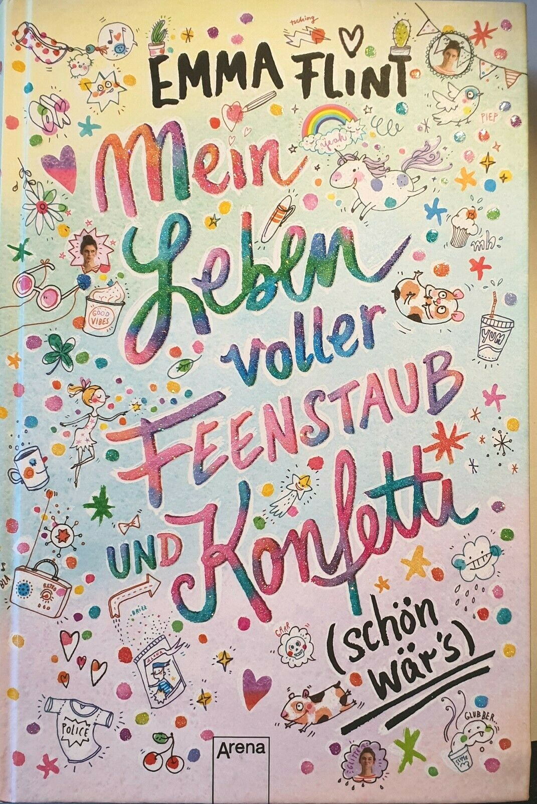
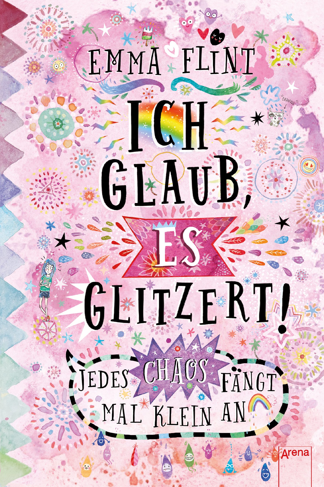

Was nicht ist, kann ja noch peinlich werden! Für die Klassenfahrt hat sich Ella bestes Benehmen verordnet. Denn seit dieser dummen Sache mit dem Notausgangsschild haben die Lehrer sie total auf dem Kieker. Für Ella, die Blamagen-Expertin, eine echte Herausforderung! Besonders als sich ihre beste Freundin Fee verliebt und plötzlich nur Unsinn im Kopf hat. Die Katastrophen sind vorprogrammiert! Und dann taucht auch noch dieser Blödmann Jannis in Ellas Schule auf. 699 Peinlichkeiten später wünscht sich Ella bloß eines: von vorne anfangen! Als Ella tatsächlich in der Zeit zurückspringt, hat sie endlich den Durchblick und kann alles besser machen. Oder etwa doch nicht? Dieser Tagebuchroman macht selbstbewusst und gute Laune und ist perfekt für alle, die lustig-turbulente Geschichten lieben! Erfolgsautorin Emma Flint weiß genau, was sich Kinder ab 10 wünschen. Mit süßen Vignetten und einem tollen Glitzer-Cover von Eva-Schöffmann-Davidov🎀.
Inhalt Lenis Plan an der neuen Schule: Bloss. Nicht. Auffallen. Schließlich ist dort ihre ältere Schwester Fiona der unangefochtene Star und Leni will sie auf keinen Fall blamieren. Leichter gesagt als getan, wenn man eine große Klappe hat: Erst wird Leni zur Klassensprecherin gewählt, dann muss sie vor der gesamten Schule einen gewagten Wetteinsatz einlösen. Ein Leben voller Feenstaub und Konfetti? Schön wär's! Stattdessen Schwesternzoff ohne Ende. Um sich mit Fiona zu versöhnen, beschließt Leni, sie mit ihrem Schwarm zu verkuppeln. Doch Lenis Chaos-Magnet lässt einfach nicht locker ...
Von der Spezialistin für Beste-Freundinnen-Geschichten: Emma Flints neuer hochkomischer Tagebuch-Roman! Ida kann es nicht fassen: Ihre Mutter ist so schusselig, dass sie vergessen hat, den Urlaub zu buchen. Bye-bye, Seychellen! Dummerweise hat Ida bereits allen in ihrer Klasse von dem tollen Inselurlaub vorgeschwärmt und coole Fotos versprochen. Die Lösung: Ida macht Selfie-Urlaub! Einfach vor exotischer Kulisse total entspannt in die Kamera lächeln und schon ist Ida voll in den Ferien! Doch leichter geplant als getan: Spätestens nach einem Angriff von Schnappschildkröten und einer unfreiwilligen Tanzeinlage ist zumindest eine Sache glasklar: Jedes Chaos fängt mal klein an! Authentisch, frech und voller Situationskomik in Tagebuchform. Für alle ab 10 Jahren, die Glitzer, Chaos und Freundschaftsthemen lieben! Mit Glitzerlack auf dem Cover von Eva Schöffmann-Davidov Mit Glitzerlack auf dem Cover von Eva Schöffmann-Davidov Mit Glitzerlack auf dem Cover von Eva Schöffmann-Davidov 🌈. . .
Also ich finde diese Bücher sehr cool weil ich die sprüche lustig finde ,und die Cover sie ist so farbig und gleichzeitig cool .ich finde Emma Flint schreibt tolle Bücher.Sie weiss was zehn järige mädchen gerne haben und wie es in tagebuch form (nicht wie lotta leben) geschrieben ist ist voll cool zum Lesen.
Emma Flint wurde 1975 geboren . Sie hat schon als Hausbotin,Bademeisterin als Basketballtrainerin ,als regalräumerin,und im Supermarkt ,als Ferhnseh-radioreporterin bevor sie anfing ,Bücher zu schreiben .(Puh das war ja viel!)Wobei ihres letztest am meisten spass macht .Sie lebt mit ihre Familie in Köln .👩